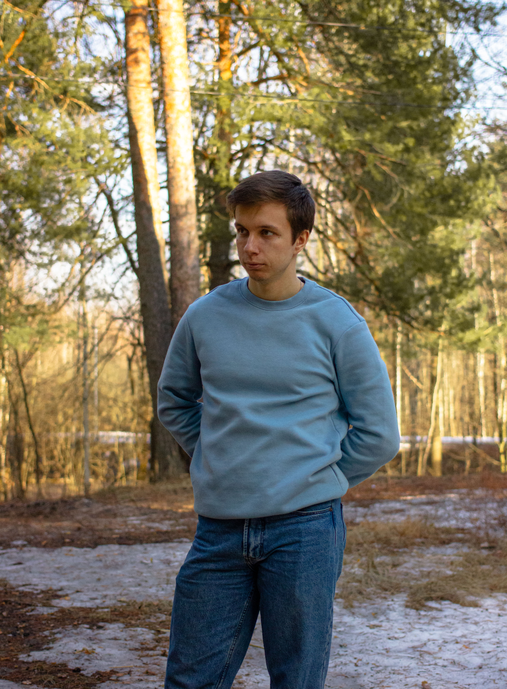

Данилов Руслан Олегович, 20 лет
Дата рождения: 03.09.2001
Родной город: Балахна
Контакты:
+7 (904) 041 57 69
danilov200193@gmail.com
Образование:
Высшее (обучаюсь)
Университет: НГТУ имени Р.Е.Алексеева
Факультет: ИРИТ
Направление подготовки (специальность):
«Информационные системы и технологии» (код 09.03.02)
Группа: 19-СБК (3 курс)
Навыки:
| 1. | Работа с языком C++ (лабораторные работы, курсовая) |
| 2. | Работа с языком C# |
| 3. | Работа с языком Java |
| 4. | Создание Эхо-бота telegram на Java |
| 5. | Работа с HTML |
| 6. | Работа с CSS |
| 7. | Небольшое знакомство с препроцессором SASS |
| 8. | Опыт работы с фреймворком Angular (курсовая работа) |
| 9. | Работа с Python (пара лабораторных работ) |
| 10. | Работа в языке C++ |
| 11. | Успешная сдача 1 домашки по Java |
| 12. | Успешная сдача 2 домашки по Java |